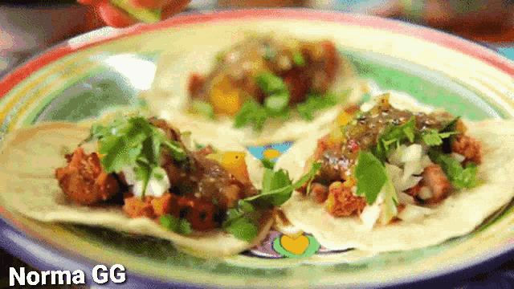

What is a Taco?
A taco is a Mexican food item built around a tortilla, which can be made from corn or wheat flour, and serves as the base for the filling. The tortilla is folded or slightly rolled to hold the ingredients, making it easy to eat by hand. The filling can include meat (beef, pork, chicken), seafood, beans, vegetables, or cheese, and is often garnished with salsa, guacamole, onions, cilantro, lettuce, tomatoes, or chiles. The tortilla is essential; without it, the dish is not considered a taco.
